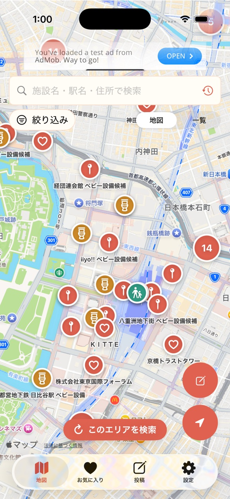
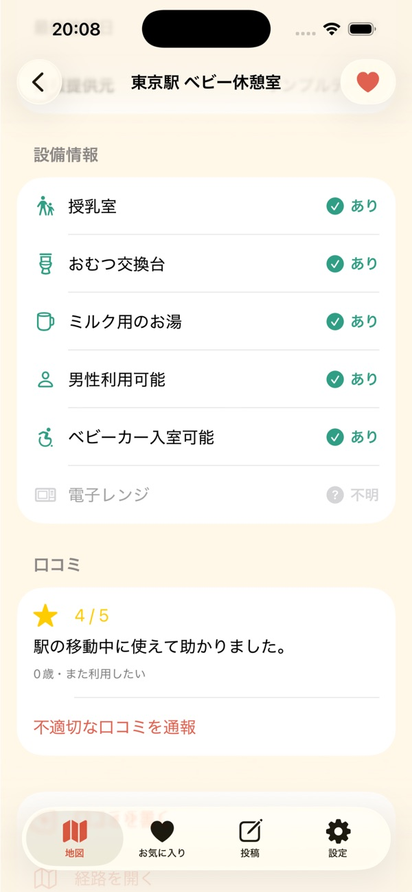

そろそろ、授乳の時間。
近くの授乳室をチェック。
移動する前に、行き先の候補を。
赤ちゃんとのおでかけを、もっと気軽に。
授乳室・おむつ交換台を、地図からかんたん検索。
必要な設備を確認して、おでかけ先を見つけよう。
iPhone対応 · 基本機能は無料 · アカウント登録なしで検索
できることを見る
こんなときに、ベビーマップ。
近くの授乳室をチェック。
移動する前に、行き先の候補を。
おむつ交換台のある施設に絞って、
必要な場所を探せます。
駅名や施設名で調べて、
おでかけ先の設備を先に確認。
見つけて、確認して、おでかけへ。
いまいる場所でも、これから行く街でも。
知りたい情報に、少ない操作でたどり着けます。

周辺の施設を地図で確認。施設名・駅名・住所からの検索や、一覧での比較もできます。
よく使う条件はすぐに切り替え。ミルク用のお湯やベビーカーの入室など、ほかの設備でも絞り込めます。
設備の有無、住所、確認日、口コミをひとつの画面で。未確認の項目は「不明」と表示し、確認できている情報と区別します。
掲載画像はApp Store公開画像です。画面・掲載内容はバージョンや施設により異なります。
いつもの場所が、あなたのリストに。
見つけた施設は、お気に入りへ。
次のおでかけでは、探し直す手間を少なく。
30件まで無料で保存できます。
みんなの気づきで、もっと使いやすく。
新しい施設の投稿や、掲載情報の修正、口コミで情報を共有できます。
投稿や修正はすべて無料。荒らし対策のため、どなたにも1日の上限があります。
まずは、無料ではじめよう。
無料プラン
¥0
授乳室・おむつ交換台を探す基本機能に。
アプリ内に広告が表示されます。
無料でダウンロードプレミアム
¥500 買い切り
広告のない画面で、すっきり探したい方に。
アプリ内の「設定 → プレミアム」から購入できます。
アプリでプレミアムを見る500円は日本のApp Storeでの価格です。実際の購入価格はアプリ内の表示をご確認ください。
機種変更後は、購入時と同じApple Accountで「購入を復元」から引き継げます。
お使いになる前に。
気になることを、
ここで少し解消できたら。
地図・一覧からの検索、設備での絞り込み、施設詳細の確認、投稿・修正・口コミが無料です。お気に入りは30件まで保存できます。無料版には広告が表示されます。
使えます。はじめの画面で「地域検索からはじめる」を選ぶと、施設名・駅名・住所から探せます。現在地の周辺を探す場合は、位置情報の利用を許可してください。
その設備の有無が確認できていないことを表します。すべての設備が利用できるという意味ではありません。設備が未確認の候補施設は初期設定で非表示になっており、絞り込みから表示できます。
施設詳細画面から修正提案をお送りください。掲載情報は公開情報や利用者の投稿をもとにしています。設備や営業時間が変わる場合があるため、お急ぎの場合は施設の公式情報もご確認ください。
いいえ。現在のプレミアムは買い切りプランです。1回の購入で広告非表示とお気に入りの件数制限解除をご利用いただけます。日本での価格は500円です。
同じApple Accountをご利用の場合、再購入は不要です。アプリの「設定 → プレミアム → 購入を復元」から購入情報を復元してください。
今日のおでかけにも、次の週末にも。
基本機能は無料・iPhone対応